现代操作系统提供了三种基本的构造并发程序的方法:
进程:用这种方法，每个逻辑控制流都是一个进程，由内核来调度和维护。因为进程有独立的虚拟地址空间，想要和其他流通信，控制流必须使用某种显式的进程间通信(interprocess communication, IPC)机制。
I/O多路复用:在这种形式的并发编程中，应用程序在一个进程的上下文中显式地调度它们自己的逻辑流。逻辑流被模型化为状态机，数据到达文件描述符后，主程序显式地从一个状态转换到另一个状态。因为程序是一个单独的进程，所以所有的流都共享
同一个地址空间。
线程:线程是运行在一个单一进程上下文中的逻辑流，由内核进行调度。你可以把线程看成是其他两种方式的混合体，像进程流一样由内核进行调度，而像I/O多路复用流一样共享同一个虚拟地址空间。
基于进程的并发编程
构造并发程序最简单的方法就是用进程，使用那些大家都很熟悉的函数，像fork,exec和waitpid。例如，一个构造并发服务器的自然方法就是，在父进程中接受客户端连接请求，然后创建一个新的子进程来为每个新客户端提供服务。
假设我们有两个客户端和一个服务器，服务器正在监听一个监听描述符(比如指述符3)上的连接请求。现在假设服务器接受了客户端1的连接请求，并返回一个已连接描述符(比如指述符4)，如下图所示。在接受连接请求之后，服务器

派生一个子进程，这个子进程获得服务器描述符表的完整副本。子进程关闭它的副本中的监听描述符3，而父进程关闭它的已连接描述符4的副本，因为不再需要这些描述符了。这就得到了下图中的状态，其中子进程正忙于为客户端提供
服务。
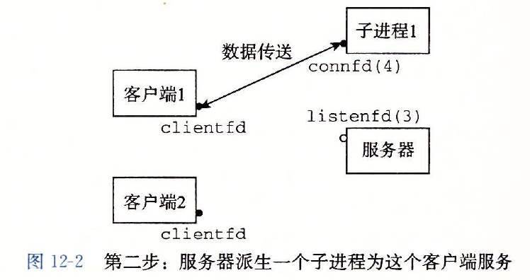
因为父、子进程中的已连接描述符都指向同一个文件表表项，所以父进程关闭它的已连接描述符的副本是至关重要的。否则，将永不会释放已连接描述符4的文件表条目，而且由此引起的内存泄漏将最终消耗光可用的内存，使系统崩溃。
现在，假设在父进程为客户端1创建了子进程之后，它接受一个新的客户端2的连接请求，并返回一个新的已连接描述符(比如描述符5)，下图所示。然后，父进程又派生另一个子进程，这个子进程用已连接描述符5为它的客户端提供服
务，
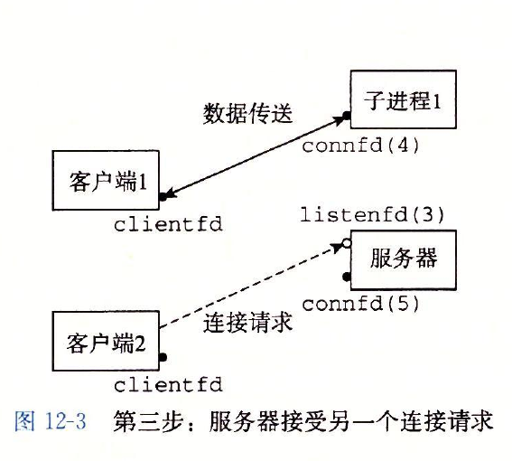
如下图所示。此时，父进程正在等待下一个连接请求，而两个子进程正在并发地为它们各自的客户端提供服务。
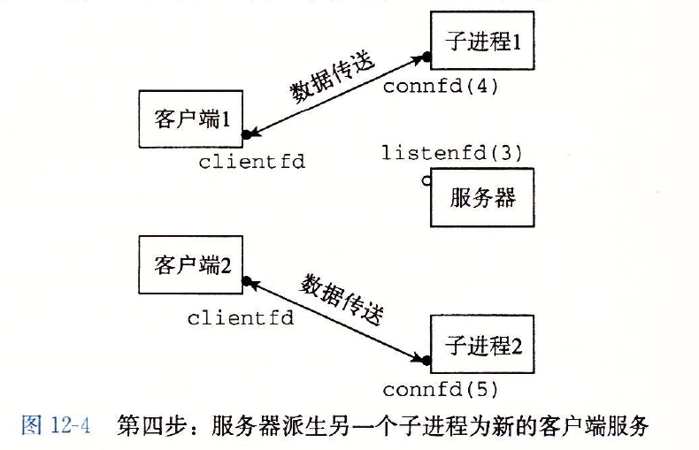
基于进程的并发服务器
首先，通常服务器会运行很长的时间，所以我们必须要包括一个SIGCHLD处理程序，来回收僵死((zombie)子进程的资源。因为当SIGCHLD处理程序执行时，SIGCHLD信号是阻塞的，而Linux信号是不排队的，所以SIGCHLD处理程
序必须准备好回收多个僵死子进程的资源。
其次，父子进程必须关闭它们各自的connfd副本。就像我们已经提到过的，这对父进程而言尤为重要，它必须关闭它的已连接描述符，以避免内存泄漏。
最后，因为套接字的文件表表项中的引用计数，直到父子进程的connfd都关闭了，到客户端的连接才会终止。
进程的优劣
对于在父、子进程间共享状态信息，进程有一个非常清晰的模型:共享文件表，但是不共享用户地址空间。进程有独立的地址空间既是优点也是缺点。这样一来，一个进程不可能不小心覆盖另一个进程的虚拟内存，这就消除了许
多令人迷惑的错误—这是一个明显的优点。
另一方面，独立的地址空间使得进程共享状态信息变得更加困难。为了共享信息，它们必须使用显式的IPC(进程间通信)机制。(参见下面的旁注。)基于进程的设计的另一个缺点是，它们往往比较慢，因为进程控制和IPC的开销很高。
基于I/O多路复用的并发编程
针对这种困境的一个解决办法就是I/O多路复用(I/O multiplexing)技术。基本的思路就是使用select函数，要求内核挂起进程，只有在一个或多个I/O事件发生后，才将控制返回给应用程序，就像在下面的示例中一样:
.当集合中任意描述符准备好读时返回。
.当集合中任意描述符准备好写时返回。
.如果在等待一个I/O事件发生时过了限定时间，就超时。
select是一个复杂的函数，
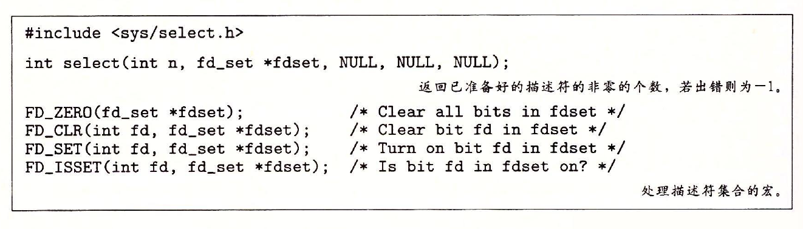
select函数处理类型为fd_set的集合，也叫做描述符集合。逻辑上，我们将描述符集合看成一个大小为n的位向量:
b[n]，…,b[1],b[0]
每个位b[k]对应于描述符k。当且仅当b[k]=1，描述符k才表明是描述符集合的一个元素。只允许你对描述符集合做三件事:
1)分配它们，
2)将一个此种类型的变量赋值给另一个变量，
3)用FD_ ZERO, FD_ SET, FD_ CLR和FD_ ISSET宏来修改和检查它们。
针对我们的目的，select函数有两个输人:一个称为读集合的描述符集合(fdset)和该读集合的基数(n)(实际上是任何描述符集合的最大基数)。select函数会一直阻塞，直到读集合中至少有一个描述符准备好可以读。当且仅当一个
从该描述符读取一个字节的请求不会阻塞时，描述符k就表示准备好可以读了。select有一个副作用，它修改参数fdset指向的fd_set，指明读集合的一个子集，称为准备好集合(ready set)，这个集合是由读集合中准备好可以读了
的描述符组成的。该函数返回的值指明了准备好集合的基数。注意，由于这个副作用，我们必须在每次调用select时都更新读集合。
I/O多路复用技术的优劣
事件驱动设计的一个优点是，它比基于进程的设计给了程序员更多的对程序行为的控制。例如，我们可以设想编写一个事件驱动的并发服务器，为某些客户端提供它们需要的服务，而这对于基于进程的并发服务器来说，是很困难
的。
另一个优点是，一个基于I/O多路复用的事件驱动服务器是运行在单一进程上下文中的，因此每个逻辑流都能访问该进程的全部地址空间。这使得在流之间共享数据变得很容易。一个与作为单个进程运行相关的优点是，你可以利
用熟悉的调试工具，例如GDB,来调试你的并发服务器，就像对顺序程序那样。
最后，事件驱动设计常常比基于进程的设计要高效得多，因为它们不需要进程上下文切换来调度新的流。
事件驱动设计一个明显的缺点就是编码复杂。随着并发粒度的减小，复杂性还会上升。这里的粒度是指每个逻辑流每个时间片执行的指令数量
基于事件的设计另一个重要的缺点是它们不能充分利用多核处理器。
基于线程的并发编程
现代系统也允许我们编写一个进程里同时运行多个线程的程序。线程由内核自动调度。每个线程都有它自己的线程上下文(thread context)，包括一个唯一的整数线程ID(Thread ID, TID)、栈、栈指针、程序计数器、通用目的寄
存器和条件码。所有的运行在一个进程里的线程共享该进程的整个虚拟地址空间。
基于线程的逻辑流结合了基于进程和基于I/O多路复用的流的特性。同进程一样，线程由内核自动调度，并且内核通过一个整数ID来识别线程。同基于I/O多路复用的流一样，多个线程运行在单一进程的上下文中，因此共享这个进程虚
拟地址空间的所有内容，包括它的代码、数据、堆、共享库和打开的文件。
线程执行模型
多线程的执行模型在某些方面和多进程的执行模型是相似的。思考下图中的示例。每个进程开始生命周期时都是单一线程，这个线程称为主线程(main thread)。
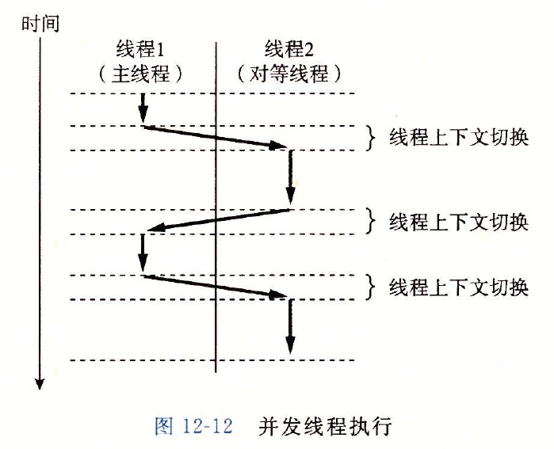
在某一时刻，主线程创建一个对等线程(peer thread)，从这个时间点开始，两个线程就并发地运行。最后，因为主线程执行一个慢速系统调用，例如read或者sleep，或者因为被系统的间隔计时器中断，控制就会通过上下文切
换传递到对等线程。对等线程会执行一段时间，然后控制传递回主线程，依次类推。
在一些重要的方面，线程执行是不同于进程的。因为一个线程的上下文要比一个进程的上下文小得多，线程的上下文切换要比进程的上下文切换快得多。另一个不同就是线程不像进程那样，不是按照严格的父子层次来组织的。和
一个进程相关的线程组成一个对等(线程)池，独立于其他线程创建的线程。主线程和其他线程的区别仅在于它总是进程中第一个运行的线程。对等(线程)池概念的主要影响是，一个线程可以杀死它的任何对等线程，或者等待它的
任意对等线程终止。另外，每个对等线程都能读写相同的共享数据。
Posix线程
Posix线程(Pthreads)是在C程序中处理线程的一个标准接口。它最早出现在1995年，而且在所有的Linux系统上都可用。Pthreads定义了大约60个函数，允许程序创建、杀死和回收线程，与对等线程安全地共享数据，还可以通
知对等线程系统状态的变化。
创建线程
线程通过调用Pthread create函数来创建其他线程。pthread create函数创建一个新的线程，并带着一个输入变量arg，在新线程的上下文中运行线程例程f。能用attr参数来改变新创建线程的默认属性。
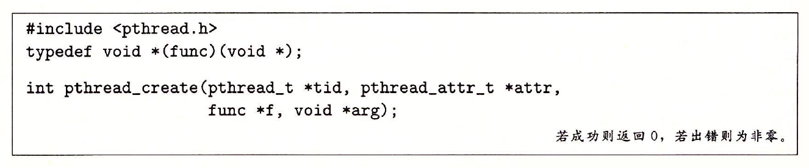
当pthread create返回时，参数tid包含新创建线程的ID。新线程可以通过调用pthread_self函数来获得它自己的线程ID.
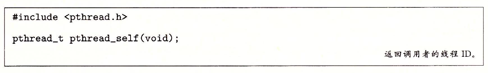
终止线程
一个线程是以下列方式之一来终止的:
.当顶层的线程例程返回时，线程会隐式地终止。
.通过调用Pthreades_exi七函数，线程会显式地终止。如果主线程调用pthread_exit，它会等待所有其他对等线程终止，然后再终止主线程和整个进程，返回值为thread_return.
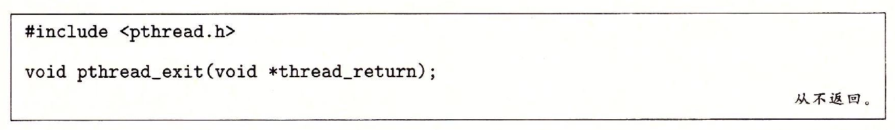
.某个对等线程调用Linux的exit函数，该函数终止进程以及所有与该进程相关的线程。
.另一个对等线程通过以当前线程ID作为参数调用pthread_cancel函数来终止当前线程。
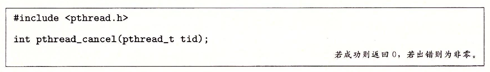
回收已终止线程的资源
线程通过调用Pthread_join函数等待其他线程终止。
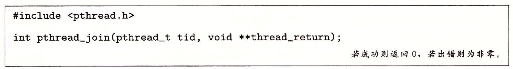
pthread_join函数会阻塞，直到线程tid终止，将线程例程返回的通用(void*)指针赋值为thread_return指向的位置，然后回收已终止线程占用的所有内存资源。
注意，和Linux的wait函数不同，pthread_join函数只能等待一个指定的线程终止。没有办法让pthread_wait等待任意一个线程终止。这使得代码更加复杂，因为它迫使我们去使用其他一些不那么直观的机制来检测进程的终止。
分离线程
在任何一个时间点上，线程是可结合的(joinable)或者是分离的(detached)。一个可结合的线程能够被其他线程收回和杀死。在被其他线程回收之前，它的内存资源(例如栈)是不释放的。相反，一个分离的线程是不能被其他线
程回收或杀死的。它的内存资源在它终止时由系统自动释放。
默认情况下，线程被创建成可结合的。为了避免内存泄漏，每个可结合线程都应该要么被其他线程显式地收回，要么通过调用pthread_detach函数被分离。
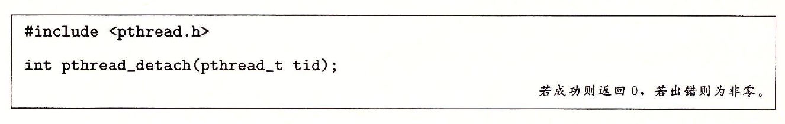
pthread_detach函数分离可结合线程tid。线程能够通过以pthread_self()为参数的pthread_detach调用来分离它们自己。
尽管我们的一些例子会使用可结合线程，但是在现实程序中，有很好的理由要使用分离的线程。
初始化线程
pthread_once函数允许你初始化与线程例程相关的状态。
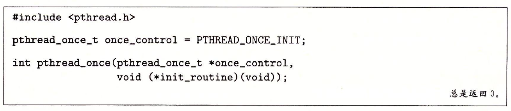
once_control变量是一个全局或者静态变量，总是被初始化为PTHREAD_ONCE_INIT.当你第一次用参数once_control调用pthread_once时，它调用init_routine这是一个没有输人参数、也不返回什么的函数。接下来的以
once_control为参数的pthread_once调用不做任何事情。无论何时，当你需要动态初始化多个线程共享的全局变量时，pthread once函数是很有用的。。
多线程程序中的共享变量
为了理解C程序中的一个变量是否是共享的，有一些基本的问题要解答:
1)线程的基础内存模型是什么?
2)根据这个模型，变量实例是如何映射到内存的?
3)最后，有多少线程引用这些实例?
一个变量是共享的，当且仅当多个线程引用这个变量的某个实例。
线程内存模型
一组并发线程运行在一个进程的上下文中。每个线程都有它自己独立的线程上下文，包括线程ID、栈、栈指针、程序计数器、条件码和通用目的寄存器值。每个线程和其他线程一起共享进程上下文的剩余部分。这包括整个用户虚
拟地址空间，它是由只读文本(代码)、读/写数据、堆以及所有的共享库代码和数据区域组成的。线程也共享相同的打开文件的集合。
从实际操作的角度来说，让一个线程去读或写另一个线程的寄存器值是不可能的。另一方面，任何线程都可以访问共享虚拟内存的任意位置。如果某个线程修改了一个内存位置，那么其他每个线程最终都能在它读这个位置时发现
这个变化。因此，寄存器是从不共享的，而虚拟内存总是共享的。
各自独立的线程栈的内存模型不是那么整齐清楚的。这些栈被保存在虚拟地址空间的栈区域中，并且通常是被相应的线程独立地访问的。我们说通常而不是总是，是因为不同的线程栈是不对其他线程设防的。所以，如果一个线程
以某种方式得到一个指向其他线程栈的指针，那么它就可以读写这个栈的任何部分。下面示例程序在第26行展示了这一点，其中对等线程直接通过全局变量ptr间接引用主线程的栈的内容。
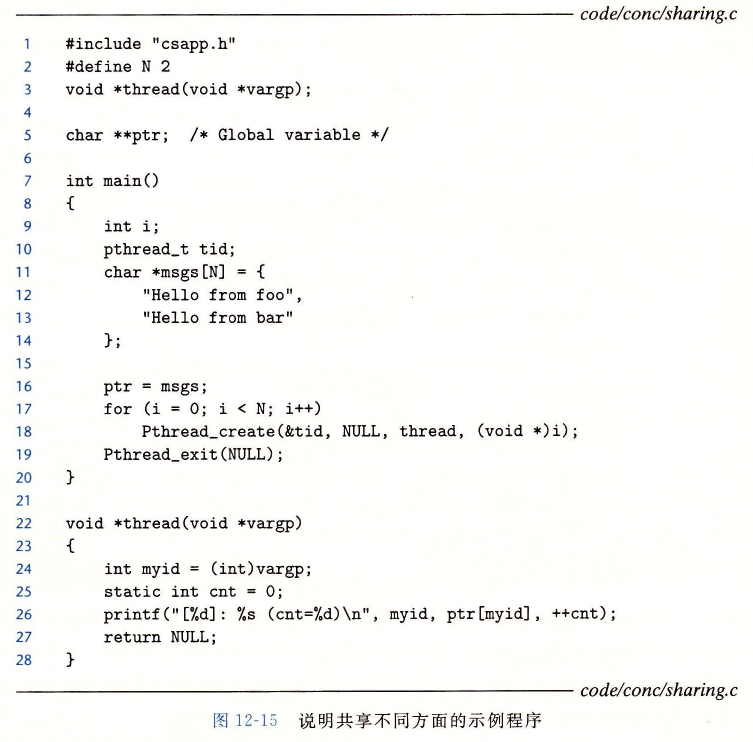
将变量映射到内存
多线程的C程序中变量根据它们的存储类型被映射到虚拟内存:
.全局变量:
全局变量是定义在函数之外的变量。在运行时，虚拟内存的读/写区域只包含每个全局变量的一个实例，任何线程都可以引用。
例如，第5行声明的全局变量ptr在虚拟内存的读/写区域中有一个运行时实例。当一个变量只有一个实例时，我们只用变量名(在这里就是ptr)来表示这个实例。
.本地自动变量:
本地自动变量就是定义在函数内部但是没有static属性的变量。在运行时，每个线程的栈都包含它自己的所有本地自动变量的实例。即使多个线程执行同一个线程例程时也是如此。
.本地静态变量:
本地静态变量是定义在函数内部并有static属性的变量。和全局变量一样，虚拟内存的读/写区域只包含在程序中声明的每个本地静态变量的一个实例。
共享变量
我们说一个变量v是共享的，当且仅当它的一个实例被一个以上的线程引用。
例如，示例程序中的变量cnt就是共享的，因为它只有一个运行时实例，并且这个实例被两个对等线程引用。在另一方面，myid不是共享的，因为它的两个实例中每一个都只被一个线程引用。然而，认识到像msgs这样的本地自动
变量也能被共享是很重要的。
用信号量同步线程
信号量
一种经典的解决同步不同执行线程问题的方法信号量(semaphore)的特殊类型变量的。信号量s是具有非负整数值的全局变量，只能由两种特殊的操作来处理，这两种操作称为P和V:
.P(s):如果s是非零的，那么P将减1，并且立即返回。如果s为零，那么就挂起这个线程，直到s变为非零，而一个V操作会重启这个线程。在重启之后，P操作将s减1，并将控制返回给调用者。
.V(s):V操作将s加1。如果有任何线程阻塞在P操作等待s变成非零，那么V操作会重启这些线程中的一个，然后该线程将s减1，完成它的P操作。
P中的测试和减1操作是不可分割的，也就是说，一旦预测信号量s变为非零，就会将s减1，不能有中断。V中的加1操作也是不可分割的，也就是加载s加1和存储信号量的过程中没有中断。注意，V的定义中没有定义等待线程被重
启动的顺序。唯一的要求是V必须只能重启一个正在等待的线程。因此，当有多个线程在等待同一个信号量时，你不能预测V操作要重启哪一个线程。
P和V的定义确保了一个正在运行的程序绝不可能进人这样一种状态，也就是一个正确初始化了的信号量有一个负值。这个属性称为信号量不变性(semaphore invariant)，为控制并发程序的轨迹线提供了强有力的工具。
Posix标准定义了许多操作信号量的函数
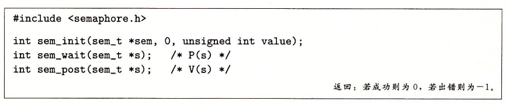
sem_init函数将信号量sem初始化为value。每个信号量在使用前必须初始化。针对我们的目的，中间的参数总是零。程序分别通过调用sem_wait和sem_post函数来执行P和V操作。
使用线程提高并行性
大多数现代机器具有多核处理器。并发程序通常在这样的机器上运行得更快，因为操作系统内核在多个核上并行地调度这些并发线程，而不是在单个核上顺序地调度。在像繁忙的Web服务器、数据库服务器和大型科学计算代码这样的应
用中利用这样的并行性是至关重要的，而且在像Web浏览器、电子表格处理程序和文档处理程序这样的主流应用中，并行性也变得越来越有用。
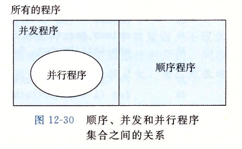
上图给出了顺序、并发和并行程序之间的集合关系。所有程序的集合能够被划分成不相交的顺序程序集合和并发程序的集合。写顺序程序只有一条逻辑流。写并发程序有多条并发流。并行程序是一个运行在多个处理器上的并发程序。
因此，并行程序的集合是并发程序集合的真子集。
其他并发问题
线程安全
当用线程编写程序时，必须小心地编写那些具有称为线程安全性(thread safety)属性的函数。一个函数被称为线程安全的(thread-safe)，当且仅当被多个并发线程反复地调用时，它会一直产生正确的结果。如果一个函数不
是线程安全的，我们就说它是线程不安全的(thread-unsafe)。
我们能够定义出四个(不相交的)线程不安全函数类:
第1类:不保护共享变量的函数。
第2类:保持跨越多个调用的状态的函数。
第3类:返回指向静态变量的指针的函数。
有两种方法来处理这类线程不安全函数:
一种选择是重写函数，使得调用者传递存放结果的变量的地址。这就消除了所有共享数据，但是它要求程序员能够修改函数的源代码。
如果线程不安全函数是难以修改或不可能修改的(例如，代码非常复杂或是没有源代码可用)，那么另外一种选择就是使用加锁一复制(lock-and-copy)技术。基本思想是将线程不安全函数与互斥锁联系起来。在每一个调用位置，
对互斥锁加锁，调用线程不安全函数，将函数返回的结果复制到一个私有的内存位置，然后对互斥锁解锁。为了尽可能地减少对调用者的修改，你应该定义一个线程安全的包装函数，它执行加锁一复制，然后通过调用这个包装函
数来取代所有对线程不安全函数的调用。
第4类:调用线程不安全函数的函数。如果函数f调用线程不安全函数g，那么f就是线程不安全的吗?不一定。如果g是第2类函数，即依赖于跨越多次调用的状态，那么f也是线程不安全的，而且除了重写g以外，没有什么办法。
然而，如果K是第1类或者第3类函数，那么只要你用一个互斥锁保护调用位置和任何得到的共享数据，f仍然可能是线程安全的。
可重入性
有一类重要的线程安全函数，叫做可重入函数(reentrant function)，其特点在于它们具有这样一种属性:当它们被多个线程调用时，不会引用任何共享数据。尽管线程安全和可重入有时会(不正确地)被用做同义词，但是它们
之间还是有清晰的技术差别，值得留意。下图展示了可重人函数、线程安全函数和线程不安全函数之间的集合关系。所有函数的集合被划分成不相交的线程安全和线程不安全函数集合。可重入函数集合是线程安全函数的一个真子集。
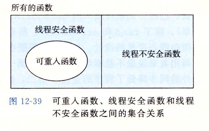
可重人函数通常要比不可重入的线程安全的函数高效一些，因为它们不需要同步操作。更进一步来说，将第2类线程不安全函数转化为线程安全函数的唯一方法就是重写它，使之变为可重人的。
在线程化的程序中使用已存在的库函数
大多数Linux函数，包括定义在标准C库中的函数(例如malloc, free, realloc,grintf和scanf)都是线程安全的，只有一小部分是例外。下图列出了常见的例外。
strtok函数是一个已弃用的(不推荐使用)函数。
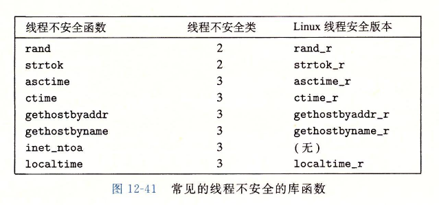
Linux系统提供大多数线程不安全函数的可重人版本。可重入版本的名字总是以"r"后缀结尾。例如，asctime的可重人版本就叫做asctime_r。我们建议尽可能地使用这些函数。
竞争
当一个程序的正确性依赖于一个线程要在另一个线程到达y点之前到达它的控制流中的x点时，就会发生竞争(race)。通常发生竞争是因为程序员假定线程将按照某种特殊的轨迹线穿过执行状态空间，而忘记了另一条准则规定:多
线程的程序必须对任何可行的轨迹线都正确工作。
死锁
信号量引人了一种潜在的令人厌恶的运行时错误，叫做死锁(deadlock)，它指的是一组线程被阻塞了，等待一个永远也不会为真的条件。
关于死锁的重要知识:
.程序员使用p和v操作顺序不当，以至于两个信号量的禁止区域重叠。如果某个执行轨迹线碰巧到达了死锁状态d，那么就不可能有进一步的进展了，因为重叠的禁止区域阻塞了每个合法方向上的进展。换句话说，程序死锁是因为
每个线程都在等待其他线程执行一个根不可能发生的V操作。
.重叠的禁止区域引起了一组称为死锁区域(deadlock region)的状态。如果一个轨迹线碰巧到达了一个死锁区域中的状态，那么死锁就是不可避免的了。轨迹线可以进入死锁区域，但是它们不可能离开。
.死锁是一个相当困难的问题，因为它不总是可预测的。一些幸运的执行轨迹线将绕开死锁区域，而其他的将会陷入这个区域。
程序死锁有很多原因，要避免死锁一般而言是很困难的。然而，你可以应用下面的简单而有效的规则来避免死锁:
互斥锁加锁顺序规则:给定所有互斥操作的一个全序，如果每个线程都是以一种顺序获得互斥锁并以相反的顺序释放，那么这个程序就是无死锁的。
小结
进程是由内核自动调度的，而且因为它们有各自独立的虚拟地址空间，所以要实现共享数据，必须要有显式的IPC机制。事件驱动程序创建它们自己的并发逻辑流，这些逻辑流被模型化为状态机，用I/O多路复用来显式地调度这些流。
因为程序运行在一个单一进程中，所以在流之间共享数据速度很快而且很容易。线程是这些方法的混合。同基于进程的流一样，线程也是由内核自动调度的。同基于I/O多路复用的流一样，线程是运行在一个单一进程的上下文中的，
因此可以快速而方便地共享数据。
无论哪种并发机制，同步对共享数据的并发访问都是一个困难的问题。提出对信号量的P和V操作就是为了帮助解决这个问题。信号量操作可以用来提供对共享数据的互斥访问，也对诸如生产者一消费者程序中有限缓冲区和读者一写者
系统中的共享对象这样的资源访问进行调度。
并发也引人了其他一些困难的问题。被线程调用的函数必须具有一种称为线程安全的属性。我们定义了四类线程不安全的函数，以及一些将它们变为线程安全的建议。可重人函数是线程安全函数的一个真子集，它不访问任何共享数据。
可重人函数通常比不可重人函数更为有效，因为它们不需要任何同步原语。竞争和死锁是并发程序中出现的另一些困难的问题。当程序员错误地假设逻辑流该如何调度时，就会发生竞争。当一个流等待一个永远不会发生的事件时，就
会产生死锁。